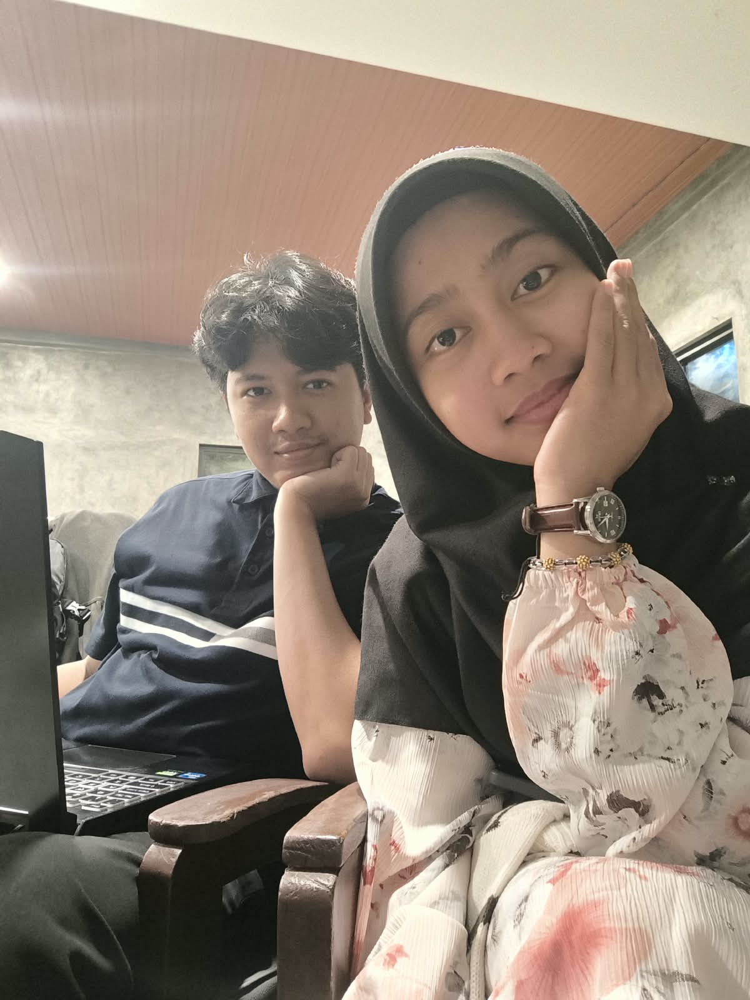
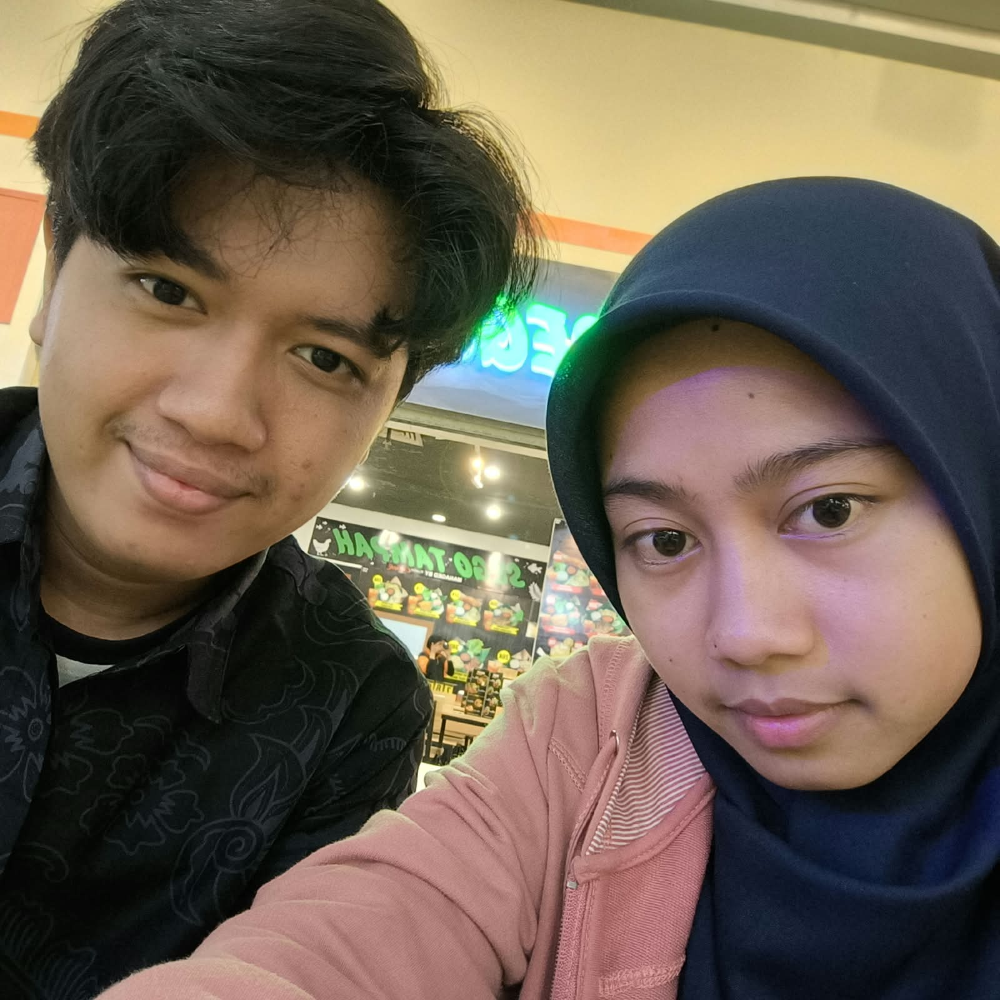
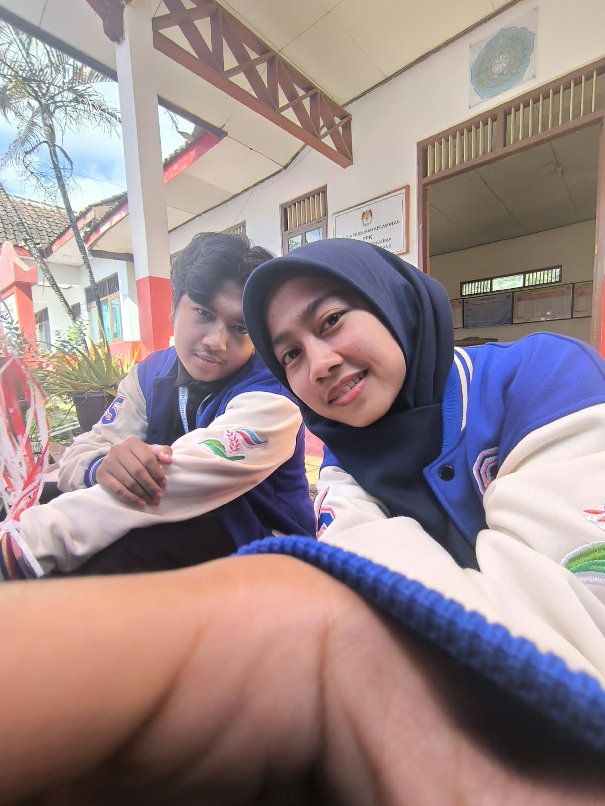
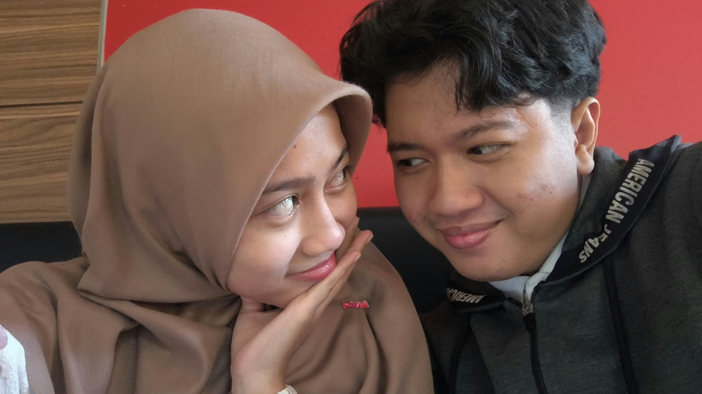

Mas nulis ini di tengah kondisi yang jujur aja masih bingung dan tertekan. Mas nggak akan pura-pura semuanya baik-baik aja — tapi Mas juga nggak mau surat ini jadi tentang Mas. Ini tentang Adek.
Mas nulis surat, bukan chat biasa, karena ada hal yang Mas takut nggak keluar dengan bener kalau cuma diketik buru-buru. Baca pelan-pelan aja ya, kapan pun Adek siap.
Mas mengkhianati kepercayaan Adek — dan ini bukan yang pertama. Ini kedua kalinya. Mas nggak akan cari alasan, itu tetap pilihan Mas, dan itu salah.
Mas juga jujur soal Mas menghilang 2 bulan tanpa kabar. Waktu itu ada permintaan dari ibu Mas yang Mas ikutin, tapi Mas salah karena nggak jelasin ke Adek. Mas minta maaf soal itu juga.

tinggal kita berdua
cerita soal Bali
KKN, belakang stan
Richeese, saling pandangsebenarnya masih banyak momen lain tentang kita dulu, tapi nggak muat di sini — intinya, Mas sayang banget sama Adek.
Mas nggak minta Adek jawab apa-apa dari surat ini. Mas cuma mau Adek tau, Mas beneran serius mau berubah, dan Mas bakal tunjukin itu pelan-pelan, lewat waktu.
Mas di sini — secepat atau selama apapun Adek butuh.
[mungkin kedepannya web ini akan up to date]